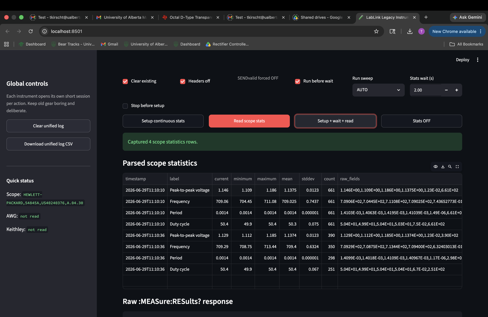
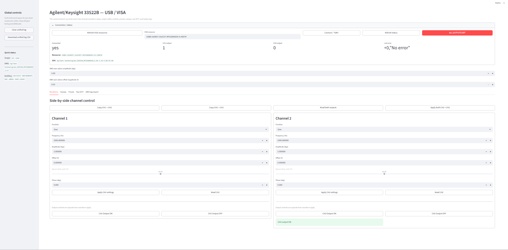
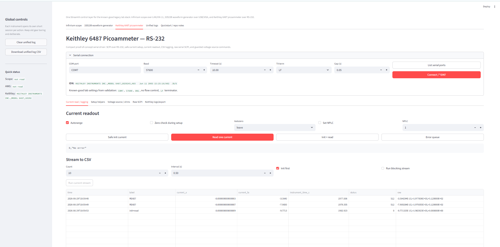
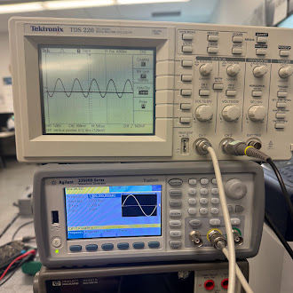
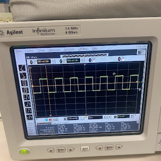
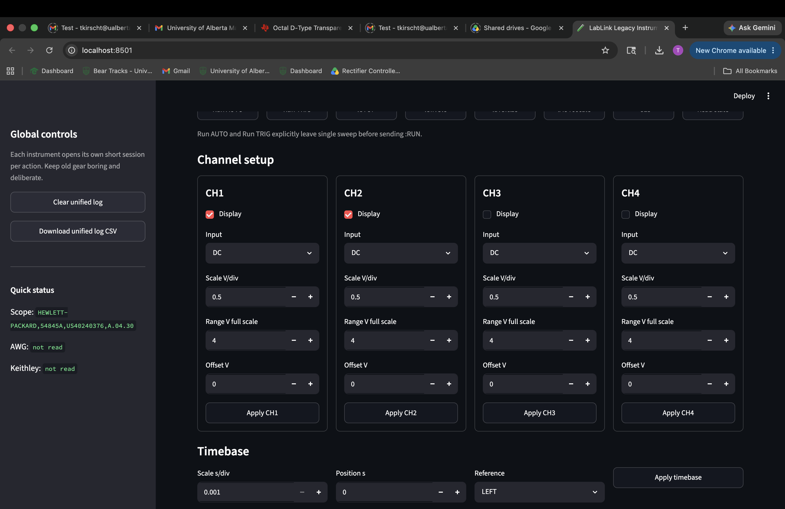

Lab automation · SCPI · VXI-11 · USB/VISA · RS-232
LabLink: Legacy Instrument Control Suite
A modular Python/Streamlit control suite for bringing older but still-capable lab instruments into a modern workflow. LabLink controls an Agilent/HP Infiniium oscilloscope over LAN/VXI-11, a Keysight/Agilent 33522B waveform generator over USB/VISA, and a Keithley 6487 picoammeter over RS-232 serial, with safe instrument-specific workflows, command logging, and data export.
Project overview
LabLink started as a practical lab need: make legacy bench equipment easier to use without replacing it. The instruments were already available, but each used a different communication path and each had its own quirks. Rather than write one-off scripts, I built a combined control layer with shared ideas: strict command/query separation, visible SCPI traffic, safe defaults, instrument-specific setup helpers, and data export for measurement work.
The project is intentionally resourceful. It uses instruments, adapters, and bench hardware that were already available and turns them into a usable modern test interface. The result is not just a UI wrapper; it is a small legacy lab-instrument stack that respects the stateful behavior of older equipment.
Supported instruments

Why this was more than sending SCPI strings
The biggest challenge was learning how to talk to older instruments without making them recover from bad command structure. The Infiniium oscilloscope was especially stateful: early versions produced delays and query errors because commands and queries were not always sequenced the way the scope expected. The fix was to treat the instrument as a state machine, not a stateless endpoint.
- Separated non-query writes from query reads so commands like
:RUNnever wait for nonexistent responses. - Consumed query responses before sending new program messages, avoiding query-interrupted/unterminated states.
- Explicitly set trigger sweep before
:RUNso the scope did not remain stuck in single-sweep behavior. - Used source-first continuous measurement definitions because the older Infiniium firmware handled that path more reliably.
- Matched serial terminators and measurement state on the Keithley before using
:READ?. - Kept outputs safe by default on the AWG and by guarding the 6487's voltage-source enable path.
Architecture
LabLink is split into instrument drivers and a combined Streamlit app. Each driver exposes a small set
of instrument-specific helpers on top of low-level write() and ask() methods, while the UI presents
practical bench workflows instead of a giant flat SCPI command list.


Hardware validation
The combined suite was tested against all three real instruments. The goal was not just to get an ID string back, but to confirm each workflow could connect, configure the instrument, perform a useful action, log cleanly, and exit safely.
| Instrument | Interface | Validated workflow |
|---|---|---|
| Agilent/HP Infiniium 54845A oscilloscope | LAN / VXI-11 | Connect, run/stop/single, channel setup, continuous statistics, waveform/measurement logging. |
| Keysight/Agilent 33522B waveform generator | USB / VISA | Connect, configure sine output, enable/disable outputs, read status/error state. |
| Keithley 6487 picoammeter | RS-232 serial | Connect at 57.6 kbaud 8N1 LF, configure current mode, read fA-level current, export CSV. |



What this project demonstrates
- Practical Python driver design for real lab hardware rather than simulated devices.
- SCPI command handling across three common legacy communication methods: LAN/VXI-11, USB/VISA, and RS-232.
- Debugging with command logs, instrument manuals, error queues, and real hardware behavior.
- Safe hardware defaults: output-off controls, guarded high-voltage source enable, and explicit acquisition states.
- Resourcefulness: turning available legacy instruments and adapters into a coherent bench automation tool.
- Packaging a collection of working drivers into a single portfolio-ready lab automation suite.
Final result
LabLink became the missing test-automation piece in my portfolio. It complements my firmware and PCB projects by showing that I can also build the tools needed to control instruments, validate hardware, record data, and make a messy real-world bench setup more usable.